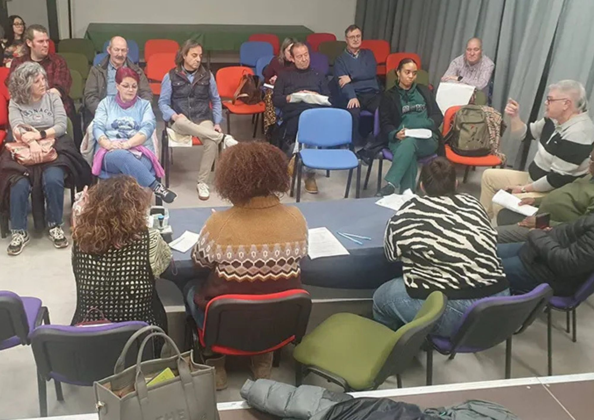

Las mañanas en Fuenlabrada rezuman convivencia. A las nueve, las persianas de los comercios chirrían al levantarse mientras el calor anticipa la llegada del verano. Las voces y vidas- se solapan en distintos acentos: un padre acompaña a sus hijos al colegio hablando en árabe mientras les ajusta las mochilas para que no se caigan de sus espaldas; en la terraza de una cafetería, una pareja conversa con acento latinoamericano sobre la próxima visita de su familia. Esta es una escena habitual en Fuenlabrada, una ciudad donde la diversidad forma parte de la vida cotidiana desde hace años.
Sin embargo, esta cotidianeidad convive con un debate político polarizado una tendencia creciente en España sobre la inmigración que, en ocasiones, por parte de diferentes grupos políticos, se aleja de los datos. Las cifras oficiales del padrón municipal muestran una evolución reciente que rompe con la idea de un crecimiento constante y al alza. En 2024, Fuenlabrada contaba con un total de 25.213 personas extranjeras empadronadas, lo cual suponía un 12,94% total de la población. Un año después, en enero, la cifra descendía de forma estable hasta 22.570 personas, un 11,84% de la población. Las cifras muestran una caída de más de 2.600 residentes extranjeros en términos absolutos. Ahora, los datos apuntan a una recuperación moderada, con aproximadamente 23.073 personas, en torno al 12,08% de los fuenlabreños.
A pesar de que el grupo de VOX en Fuenlabrada insista en un cerco férreo para la inmigración, los datos reflejan una caída pronunciada seguida de un repunte parcial que no devuelve a los índices de los que se gozó en 2024. La población extranjera pierde así más de un 1% entre 2023 y 2025 y recupera apenas unas décimas en el transcurso de este año. Fuenlabrada debe reflexionar entonces sobre el porqué de este comportamiento y qué refleja de la realidad migratoria en la ciudad.
Fuenlabrada, cuna de la diversidad
Más allá de los datos, la estructura de la población extranjera en Fuenlabrada es una realidad consolidada. De acuerdo con el Ayuntamiento de Fuenlabrada, las principales nacionalidades presentes en el municipio combinan dos grandes ejes geográficos. Por un lado, África es el principal de estos, con Marruecos y Nigeria como referentes. Por otro lado, América Latina reúne el grupo más numeroso, donde destacan principalmente Venezuela, Colombia y Perú. Cabe resaltar, además, la afluencia de población rumana, que continúa siendo una de las comunidades extranjeras más relevantes históricamente de la ciudad.
La ciudad fuenlabreña es un cuadro homogéneo con orígenes que se han ido asentando a lo largo de los años. Este arraigo explica, en parte, que la inmigración no se perciba únicamente como un fenómeno de llegada, sino como un componente estructural del municipio. Los datos a los que ha tenido acceso este periódico no consiguen explicar las variaciones recientes. El padrón municipal ofrece un cuadro preciso, pero muy limitado. Para comprender el fenómeno, es necesario mirar a los otros dos grandes pilares de Fuenlabrada, el comercio local y la economía.
El peso comercial de la inmigración
En marzo de 2026, la Oficina Nacional de Prospectiva y Estrategia -una Dirección General de la Presidencia del Gobierno- presentaba el documento España ante el reto migratorio: dos escenarios posibles. El documento dibujaba un mapa claro para los discursos xenófobos: 90.000 bares y restaurantes cerrarían, la oferta educativa se encogería y cerca de 63.000 médicos especialistas se evaporarían.
Esta realidad, con matices, puede trasladarse a la vida en Fuenlabrada. El tejido empresarial de la ciudad lo domina el sector de los servicios, que representa el 77,8% de las empresas activas. Las actividades vinculadas al comercio, transporte y hostelería concentran una parte muy sustancial de la economía global. Si estos datos se estudian más a fondo y se relacionan con el peso de la población extranjera, las conclusiones son sustanciales. De acuerdo con el informe de mercado de trabajo del CIFE, el 67,3% de la demanda de empleo de personas inmigrantes se orienta principalmente hacia el sector de los servicios, mientras que otro 15,1% se inclina hacia el sector de la construcción. Los sectores que sostienen gran parte de la economía de Fuenlabrada concentran la mayor afluencia también de inmigrantes.

Lejos de ser una conexión meramente casual, el comercio de proximidad y la hostelería funcionan como espacios de acceso al empleo, pero también como encuentros para la interacción social. La diversidad, entonces, es una parte más del engranaje de los barrios fuenlabreños. Sin embargo, aunque exista esta realidad, hay una laguna en la información que ofrece el Ayuntamiento de la ciudad. Las políticas municipales de apoyo al comercio -donde se incluyen ayudas directas, programas de formación y campañas de dinamización- no ofrecen datos concisos sobre el origen de sus beneficiarios. En 2025, por ejemplo, el Ayuntamiento destinó 100.000 euros a la modernización de las microempresas, con subvenciones que rondaban los 600 y 2.000 euros para autónomos y pequeños negocios. A pesar de estas contribuciones y de cómo Fuenlabrada se honra de su comunidad migratoria, no es posible determinar qué parte de estas ayudas han beneficiado directamente a emprendedores migrantes.
Las redes comunitarias fuenlabreñas para la población extranjera
Fuenlabrada ha desarrollado una estructura institucional orientada a la convivencia intercultural. El Programa de Sensibilización Municipal sobre la Inmigración (SEMI) constituye uno de los pilares de esta estrategia. Sus acciones se centran principalmente en la mediación intercultural de la acogida y la sensibilización ciudadana. A este programa se suma también la Mesa por la Convivencia. Esta agrupa a un total de 36 entidades sociales y ha sido reconocida como buena práctica en la Unión Europea. La Mesa por la Convivencia se alza como un modelo de integración basado principalmente en la colaboración entre instituciones y sociedad civil. En este sentido, la iniciativa funciona como un antídoto para los discursos que ven la inmigración como un problema a gestionar.
Esta se trata de un espacio que nació de la unión de tres asociaciones -vecinales y una de migrantes y que hoy reúne a 36 entidades comprometidas con el diálogo, el respeto y la diversidad. Su objetivo, declaran, es hacer de Fuenlabrada una ciudad donde se conviva "en igualdad y respeto" y donde cada persona tenga "su espacio y su voz. La inmigración no se aborda únicamente desde el plano administrativo, sino desde las realidades que atraviesan colegios, servicios públicos y vecinos. Por ello, afirman que la convivencia no se improvisa y debe trabajarse desde mediaciones, campañas de sensibilización, actividades comunitarias y redes que actúen como un paraguas para las diferencias.
La Mesa por la Convivencia de Fuenlabrada no es un disfraz institucional. La Mesa por la Convivencia se sumerge de lleno en los debates políticos y defiende formas concretas de acogida que abracen la inclusión. De la misma forma, aseguran que la ciudad debe ser cercana a su naturaleza "diversa, inclusiva e intercultural", construida primero con la llegada de población de otros puntos de España y después con vecinos procedentes de otros países.
Las iniciativas de la ciudad se extienden también al ámbito educativo, con talleres de arraigo, programas para jóvenes y actividades de sensibilización en diferentes centros. En el terreno del empleo, entidades como Cruz Roja desarrollan itinerarios de inserción laboral dirigidos a la población vulnerable, donde se incluye a las personas migrantes. Este conjunto de políticas configuran lo que el ejecutivo define como una "infraestructura de integración". Fuenlabrada trabaja desde la lógica de que la inmigración no debe tratarse de forma aislada en el empleo, vivienda o educación, aunque otros grupos políticos incidan en la "peligrosidad" de esta población.
Más allá del dato censal
Los porcentajes y mociones municipales no son el termómetro de la inmigración en Fuenlabrada. En las escenas más pequeñas y domésticas, hay clientes que buscan el ingrediente perfecto que aporte hogar a una receta familiar. A veces, una madre también pregunta por una bebida de su país y un niño compra con entusiasmo un dulce que le recuerda a casa, todavía con la mochila a las espaldas. Estos gestos entienden una parte de la ciudad que las cifras no acompañan.
Este es el espacio que ocupan proyectos como LATINEO, un comercio nacido en 2025 alrededor de productos de todos los países latinoamericanos. La tienda funciona como un gran puente entre Fuenlabrada y la cultura latina, con una propuesta que va desde alimentos tradicionales hasta artesanías. En su propio relato, el negocio habla de llevar "los sabores, colores y texturas de Latinoamérica" a quienes viven lejos de sus países y ansían acercarse a sus tradiciones. Para muchas familias migrantes, contar con determinados productos no es una cuestión de consumo, sino que es una forma de arraigarse a sus raíces aunque estén lejos-. Repetir una receta o celebrar una fecha señalada son una forma de vivir, a pesar de que sea en una mesa o una mera conversación.
LATINEO define su misión como algo más amplio que vender. Aspiran a ser "más que una tienda", por lo que ya cuentan con venta online de sus productos. Esta vocación es el eje del comercio migrante, porque, lejos de cubrir necesidades económicas, crea lugares de diálogo y pertenencia. Fuera de los datos y debates, que a menudo reducen la inmigración a un conflicto o amenaza, estas iniciativas comerciales les recuerdan la dimensión del fenómeno migratorio: el emprendimiento, abastecimiento y generación de redes de apoyo. La diversidad en Fuenlabrada supera el pleno municipal, ya que a veces está en una receta o en el reencuentro con las raíces de las que se nace.
El debate político y el caso de La Cantueña

El debate político augura un marco distinto. En enero de 2026, VOX en Fuenlabrada solicitó el cierre del centro de menores extranjeros no acompañados de La Cantueña, al que describió como un foco de inseguridad y un "modelo fracasado". La iniciativa se inscribe en una narrativa más amplia del partido a nivel nacional, que utiliza términos como "invasión migratoria" o "sustitución demográfica. Las interpretaciones del grupo de ultraderecha se suman a un Partido Popular desinflado, quienes trabajan en conjunto para tener el mayor puesto mientras asfixian las libertades de culto de un Estado laico.
El contexto local introduce matices que complejizan más esta lectura. El propio Ayuntamiento de Fuenlabrada ha expresado en reiteradas ocasiones sus críticas hacia la gestión del centro de La Cantueña, aunque desde una perspectiva centrada en la distribución de recursos y el modelo de acogida, pero no hacia el rechazo de la inmigración. Esta diferencia evidencia la coexistencia de marcos interpretativos distintos dentro del mismo espacio político. Esta realidad contrasta fuertemente con una población extranjera que se sumerge de forma plena en las dinámicas cotidianas que se vinculan con el trabajo, el comercio y la vida comunitaria.
La evolución reciente de la inmigración en Fuenlabrada pone de relieve la tensión estadística y política. Los datos muestran una población extranjera que mengua por momentos y una fluctuación que no responde a la lógica del crecimiento continuo. Asimismo, la estructura económica y social de la ciudad evidencia una integración crucial para la economía de Fuenlabrada. La inmigración deja entonces de ser una cuestión exclusivamente demográfica para convertirse en un fenómeno transversal, que atraviesa aristas claves de la ciudad. Entenderla y comprenderla es entonces el siguiente paso que deben tomar todos los colores políticos. Lejos de situar la inmigración en el centro de sus debates, deben posicionarla en el eje de sus economías y la transparencia de sus políticas.